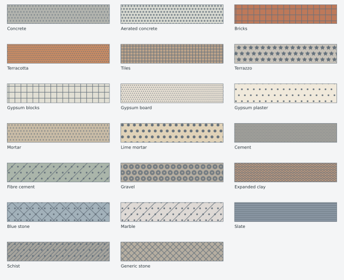
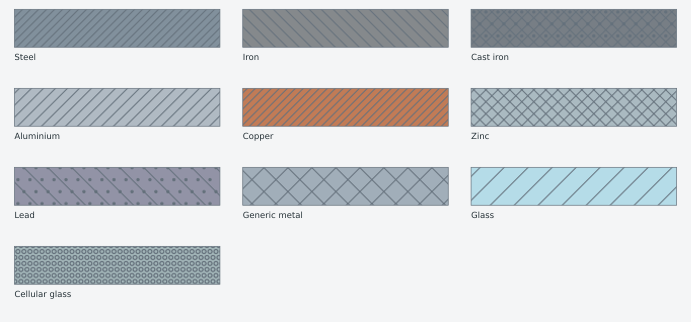
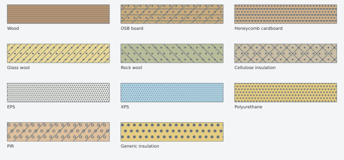
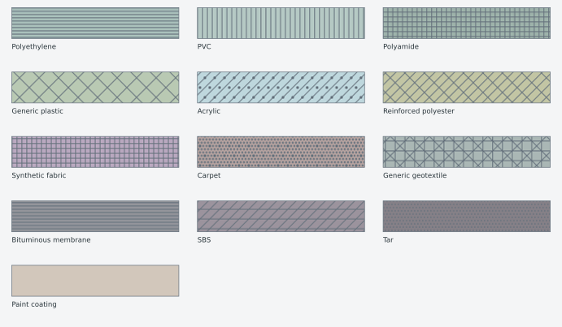
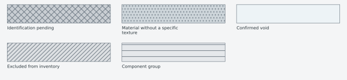

DECUB private explorer
The explorer lets users consult the catalog, physical inventory and provenance in PostgreSQL through a local Streamlit interface. It neither modifies data nor calculates intensities. Public documentation contains synthetic examples only.
The DECUB symbol accompanies the Home title; the sidebar is reserved for navigation and controls. The favicon remains on all sections.
Installation and execution
From the repository root, with the virtual environment active:
python -m pip install -e ".[visualization]"
python -m streamlit run src/decub/visualization/explorer.py --server.address 127.0.0.1 --server.port 8501 --browser.gatherUsageStats false
Open http://127.0.0.1:8501. Local PostgreSQL configuration and authorized access are required. Stop with Ctrl+C. Do not expose the port to other networks or deploy to public services. Prefer a PostgreSQL role with SELECT-only privileges; the application starts read-only transactions, which do not replace server-side permission controls. Multi-user authentication is not implemented. Do not publish screenshots, values or downloads of actual data.
Navigation
| Section | Queries |
|---|---|
| Home | Entity counts, including historical versions |
| Architectural viewer | Group cards, textured drawings, schematic windows and model diagnostics |
| Building browser | Territorial and model selection, breakdowns, records and proportional schematics |
| Materials | Identities, properties, aliases and classifications |
| Classifications | Systems, versions, nodes and parent references |
| Buildings and models | Study areas, blocks, buildings, models and measurements |
| Elements | Identifiers, measurements, subtypes and associations |
| Assemblies | Versions, parts and aggregated measurements |
| Sources | References, files and record locations |
| Imports | Adapter, status, dates and statistics |
| Quality | Missing scalar density, unmatched opaque elements and part measurements without values |
| Language coverage | Label coverage by entity and language |
In the table sections, select an entity, filter by identifier, search for literal text and paginate (up to 100 rows per page). Select a record to consult its direct relationships (up to 100 records per relationship); to continue navigating, use foreign key identifiers in the corresponding entities. Parts of an assembly version can be consulted by its identifier, retaining position and parent. An effective scientific version is not selected automatically. Quality counts include historical versions; they do not represent mass coverage or scientific validation. Nulls are not converted to zeros. Decimal values are displayed as text to preserve precision.
flowchart LR
A[Local Streamlit] --> B[Bounded SQLAlchemy queries]
B --> C[(PostgreSQL: read-only transaction)]
C --> AQueries have a statement timeout and pagination. Original payloads, import configuration and storage paths are omitted; identifiers allow provenance to be followed. There is no persistent data cache. The interface includes no exporters; the browser may allow visible data to be copied. The browser and tables share the same data and read-only transactions. The 3D viewer, certified physical sections and mass and intensity charts remain for later phases.
Building browser and visualizations
In the sidebar, select Navegador de edificios (building browser). Choose a study area, block, building and model version; each selector supports search and pagination. Views work exclusively with the selected version, not with the sum of historical models.
| View | Visualization and navigation |
|---|---|
| Breakdown | Count, recorded area and coverage by element kind, original type, original category, orientation or original opaque construction |
| Elements | Filter by the same groups, search and select an element; consult identifiers, measurements, thermal properties, associations and their assembly versions |
| Assemblies | Choose a version linked to elements or with part measurements for the model, including assemblies without element associations |
The area breakdown includes only elements with exactly one measurement of type area, unit m2, a known value and a quality other than unknown. If alternatives exist, the element is excluded from the area total but not from the count. The number of elements with and without usable area is reported for each group. Groups without values retain a null area; charts omit those values. The sum of recorded areas is not the usable, gross or net building area: it does not resolve overlap between elements or allow individual and aggregate measurements to be added together. Opaque association coverage counts elements with at least one non-retired association; it does not certify equivalences or mass availability. The original construction view includes opaque elements only. Original categories are not scientific catalog classifications. If there are more than 100 groups, partial totals or charts are not presented as complete.
Assembly schematics and windows
The schematic section uses strips whose widths are proportional to the original thickness in millimetres, in position order. It is drawn only if all parts of the version are available (at most 100), flat, have unique positions and positive, finite thicknesses. No material-specific textures or colours are assigned: colours distinguish positions. The thickness sum is arithmetic, not a certification of physical thickness; parts imported as source_part may represent components other than layers in series. If the list is hierarchical, incomplete or has unknown thicknesses, the table is retained without drawing a fictitious section.
Part measurements are filtered by model and assembly version. Areas (m2) and volumes (m3) are displayed separately, without accumulating parts, combining units, selecting alternatives or allocating aggregate data to individual elements. Charts are limited to a complete list of at most 100 records; tables support pagination. A known zero value is not equivalent to missing data.
For a window with a known frame fraction between 0 and 1, a proportional bar shows the frame and remainder (glass under the frame/glass assumption). No dimensions, geometry, thickness or composition are inferred. Thermal properties remain recorded data. Charts use approximate numbers for display; tables preserve source decimals.

Architectural viewer
In the sidebar, open Visor constructivo (architectural viewer) and select a building and model version. The simplified view retains the scientific browser and uses the same read-only queries. Cards are paginated six at a time and show counts and usable individual area with coverage; models and alternative measurements are not combined.
| View | Grouping criterion |
|---|---|
| Opaque elements | Original construction name and version of the sole non-retired association; missing or multiple associations appear as unresolved groups without choosing an assembly |
| Windows | Recorded opening name and frame fraction; this is not a geometric or material classification |
Assemblies with a complete flat list of positive, finite thicknesses are drawn in oblique perspective, with proportional widths and symbolic height and depth. Numbers identify original positions. Without a selected mapping version, colours and hatches are illustrative and selected from recognizable words in the source description. When a unique recognizable family is unavailable, a neutral texture is used. Serial layers, interior/exterior orientation, material identity, density and mass are not certified. Incomplete or hierarchical lists retain their descriptions without a proportional drawing.
Windows are represented by a normalized square with a uniform border. For frame fraction f, the side of the remaining area is the square root of 1 − f. This preserves the area proportion, not actual dimensions or physical profile thickness. The frame has a neutral appearance, without assuming aluminium or another material. The remainder is interpreted as glass only under the frame/glass assumption. If the fraction is missing, no fictitious window is drawn.
Count and area charts in the scientific browser use ranked horizontal bars, value labels and a consistent palette. Drawings use a neutral paper background legible in both themes; the drawing palette does not adapt dynamically. Figures are local, static and require no external graphical resources. For assemblies without associated elements, aggregate measurements and traceability, use the scientific browser. None of these representations calculates material quantities.
Building diagnostics
The viewer opens Resumen general (overview) by default, with element counts, individual area coverage, distribution, quantification status and model diagnostics. Navigation separates the overview, opaque elements, windows, material inventory and building diagnostics. Open Diagnóstico del edificio (building diagnostics) to filter by severity and issue type and select a record. The rule summary is visible without expanding controls: it includes severity, record counts, distinct related elements and an explanation of the consequence. Cards display their status, counts by severity and type, and allow opening filtered diagnostics. The Ver diagnóstico de todo el modelo (view diagnostics for the whole model) button clears the card filter. Diagnostics are read-only and obtained from current records; they do not store results or change review status.
| Severity | Interpretation |
|---|---|
| Error | Data unusable for the specific check; does not prove that all quantification routes are infeasible |
| Warning | Absence, alternative, association or risk requiring review |
| Observation | Recorded characteristic or representation limitation that does not necessarily constitute a defect |
| Scope | Available rules |
|---|---|
| Elements | Missing, alternative, unusable or zero area; missing opaque or window properties; missing or out-of-range frame fraction |
| Associations | Opaque elements without a non-retired association or with several; draft associations and linked retired versions |
| Assemblies and parts | Assembly without parts; unknown or zero thickness; nested parts; parts without measurements for the model |
| Part measurements | Missing value/unknown quality; unexpected area or volume unit; alternatives of the same type |
| Coverage | Coexistence of individual area and part area/volume measurements for a version; measured assembly without linked elements |
Each issue corresponds to a rule and an identified entity. An entity can have several issues. Rule occurrence counts are distinguished from distinct related element counts: for direct issues, count the element itself; for shared issues, count the elements linked to the version by non-retired associations in the selected model. A card filter restricts the latter count to its own elements. An unlinked assembly may have issues and zero related elements. Do not sum elements across rules or interpret this count as mass coverage. Part and assembly diagnostics include versions linked through non-retired associations or measured in the model. Measurements from other models never fill gaps in the selected model. Coexisting resolutions indicate a risk requiring methodological resolution, not proven physical overlap. Multiple associations may represent legitimate components. A known zero remains distinct from a missing value.
Cards include direct issues for their elements and, for a unique assembly, shared issues for its version and parts. A shared issue may appear on several cards; card counts must not be summed to obtain the model summary. Unlinked assemblies and issues not attributable to a specific card can be viewed in global diagnostics. Records show original data, identifiers and measurements; for a shared issue, elements associated with the version within the model can be paginated, without claiming that all are affected in the same way. The issue list is paginated in groups of 100; counts are not limited to the page.
Effective mappings for a calculation profile, effective density, mass coverage and compliance with a calculation methodology are not yet checked. Future quantification must share a single scientific engine, with explicit profiles and methods, traceable contributions and calculation diagnostics. Until it exists, Inventario de materiales (material inventory) shows pending mass and volume and unevaluated coverage; the overview and cards also indicate pending mass without displaying fictitious zero values. Individual area coverage in the overview is not mass coverage. Absence of issues under the current rules does not certify the scientific validity of the inventory.
Reviewed identifications
The viewer mapping version selector is explicit and defaults to no selection. With a reviewed version, opaque cards show catalog names for supported single-material identifications and catalog-identity textures; remaining parts are neutral. Textures remain representative and do not certify physical properties. Windows retain their normalized diagram without assigning frame material from appearance.
The material inventory displays per-part states and justifications and distinct identification counts, not quantities. Diagnostics distinguish identified, pending, excluded, missing-decision and unsupported-assignment parts. Related elements are distinct per state and non-retired association; counts must not be summed across states. Measured assemblies without elements may have zero related elements. Cards display pending and excluded parts in the visible part list. The 22 physical inventory diagnostic rules remain independent. See the review procedure.
Multilingual labels
The sidebar Idioma / Language / Langue selector controls the entire explorer for the session (ES by default, EN and FR). Navigation, controls, diagnostics, headers and charts are localized through visualization/i18n.py and i18n_messages.py. Entities use current PostgreSQL editorial labels, falling back to the original when absent. Codes, identifiers, justifications and original values are not rewritten. Domain values are translated by context for presentation; source categories without documented correspondence and uninterpreted orientation codes remain codes. Decimal formatting uses commas in ES/FR and points in EN, without rounding Decimal values in tables. Navigation labels are not scientific criteria. Selector options are explicitly decoded from visible text to their internal identity. Changing language keeps the active section and preserves each list selection if it remains available; if it disappears, the first available option is selected. Identical labels are disambiguated using their identifier. Navigation and filter selections may persist during the session.
The Language coverage section shows applicable totals, current, missing, stale, not-applicable and reviewed-original labels by entity and language. If there is no denominator, the percentage is null, not 0 or 100%. It uses the existing read-only audit within a repeatable snapshot; it does not export or modify data. Coverage does not imply specialist linguistic validation, translation of original texts or scientific coverage.
Component breakdown
Select a reviewed mapping version. In opaque cards, open Breakdown for a composite part or Detail for an individual identification. The material inventory allows selecting an assembly and part, including those without linked elements. Window cards display explicitly linked assemblies, with the number of elements in each link. Joinery assemblies with a breakdown but no individual link are displayed separately, without attributing them to windows. Identifications and labels follow the selected version and language.
Details reuse drawing templates for reinforced and fibre-reinforced concrete, ribbed slabs, brick masonry, thermally broken profiles, boards and membranes. Products without a template have a symbolic component representation; individual identifications display a texture sample. Tree paths connect drawing markers and the key. A template is chosen from source descriptions and node labels for graphical purposes only; material textures use reviewed identities. Unresolved components and unconfirmed geometries are neutral. The graphical key includes up to twelve nodes; the textual tree retains all components and justifications. No topping is added to the ribbed slab schematic.
| Data | Representation |
|---|---|
| Positive original thickness | The recorded part value is shown, not a validated thickness of its children. |
| Unknown thickness | Synthetic example dimension if a template is available; otherwise a symbolic representation without a measurement. |
| Internal geometry | Illustrative, not to scale, without approved fractions. |
| Catalog density | Candidates by material code, property identifier, value or range, status and provenance references; up to eight per material, without automatic selection. |
| Effective density or reinforcement content | Pending methodological selection; not inferred from drawn shapes. |
The synthetic dimension is for illustration only and is not a normative standard value. Unknown quantities are not imputed, and drawing parameters are not stored in PostgreSQL. Steel density (mass per volume of steel) does not determine reinforcement content (mass of steel per volume of the composite) or geometric distribution. Future quantification must provide justified dimensions and fractions for each subcomponent, distinguishing effective density from drawing parameters. Current details do not calculate masses or certify product configuration.
Texture gallery and graphical conventions
In Texture gallery, browse pages of 24 records and search by code, original or current translation. The gallery uses the global selector. Codes, status and identity-bound textures are shown; absent or stale labels fall back to the original. The gallery is read-only.
The visualization/material_textures.py module centralizes immutable vector hatch/color recipes and explicit bindings by stable catalog code. The library reuses the reference adapter’s code-generation function; changing a translation, language or PostgreSQL numeric identifier does not change the texture. Proportional sections, details and keys reuse the same recipes. Before selecting a review, lexical illustration remains provisional and does not identify materials.
The following sheets show the generic graphical vocabulary, not a list of materials present in a building or an export of the private catalog. Patterns are symbolic: graphical density, dots, circles, lines and colors do not encode porosity, fractions, geometry, physical density or actual color. Construction templates provide shape differences (for example, blocks versus a concrete matrix) without changing material identity.
Minerals and ceramic products

Metals and glass

Wood and insulation

Polymers, textiles and membranes

Representation states

| State | Interpretation |
|---|---|
| Identification pending | No usable identity; also applies to retired materials in reviewed views. |
| No specific texture | An identity exists, but no unambiguous graphical convention or explicit binding is available. |
| Void | Explicitly defined void node; neither a material assignment nor a zero-mass imputation. |
| Exclusion | Justified exclusion decision; does not remove the part from the physical inventory. |
| Group | Organizational node without its own material assignment. |
To extend the library, add or reuse a recipe with ES/EN/FR labels and explicitly bind the stable code in CODE_TEXTURES. New unbound codes retain the generic material-without-specific-texture hatch; an identity is not inferred from similar names. Commercial or ambiguous names do not require inventing their appearance or composition. New materials and densities are managed separately through scientific procedures.
To regenerate the generic sheets after changing recipes, with the visualization extra installed:
python tools/build_texture_gallery.py
python tools/check_docs_languages.py
The generator does not query PostgreSQL or source files. Do not publish screenshots of the private gallery or real buildings.
Extended editorial labels
Element names matching external identifiers and level names matching their code are not translated. The audit distinguishes these cases and empty names using not_applicable. Nodes retain reviewed ES/EN labels as fallback; current editorial labels take precedence in presentation, and French falls back to Spanish when absent.